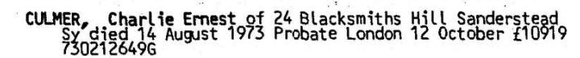
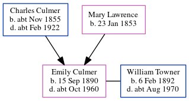

Charles Ernest Culmer 1891 - 1973
[ Home ] | [ Calendar ] | [ Surnames Index ] | [ Errors ] | [ Family History ]An electric & oxy-ace wealde foreman and the child of Charles Culmer (a coal dealer) and Mary Lawrence, Charles Culmer, the second cousin twice-removed on the mother's side of Nigel Horne, was born in Faversham, Kent, England on 11 Nov 18911,2,3,4, was baptised there at St Mary of Charity Church, Church Road on 13 Dec 1891 and married Lilian Jackson (with whom he had 1 child, Stanley Wilson Charles) at St Nicholas, Strood, Kent, England on 26 Dec 19146.
During his life, he was living at 19 Cecil Avenue in Strood on 31 Mar 19011 - less than a mile from his brother Albert Thomas who was living at 22 Station Road, Frindsbury, Kent; at 39 Cross Street in Strood on 2 Apr 19118 - less than a mile from his brother Albert Thomas, sister Emily Culmer and mother Mary Lawrence who were living at 14 Hone Street in Strood; at 273 Hither Green Lane, Lewisham, London, England in 19257; at 44 Pitfold Road, Lee, London on 29 Sept 19392; and at 11 Blacksmiths Hill, Sanderstead, Surrey, England in 1973.
He died on 14 Aug 1973 in Croydon, Surrey, England4,5.
Parents
- Charles was born c. Nov 1855
- Mary Ann was born on 23 Jan 1853
Children
- Stanley Wilson Charles was born on 21 Nov 1916
Citations
- 1901 England, Wales & Scotland Census - Findmypast (was age 9 and the son of the head of the household)
- 1939 Register - Findmypast (was the head of the household)
- England & Wales births 1837-2006 - Findmypast
- England & Wales deaths 1837-2007 - Findmypast
- England & Wales Government Probate Death Index 1858-2019 - Findmypast
- England & Wales Marriages 1837-2005 - Findmypast
- From the Electoral Register
- 1911 Census for England & Wales - Findmypast (was age 19 and the son of the head of the household)
Media
Charles Ernest Culmer - Probate

England & Wales marriages 1837-2005 - BMD/M/1914/4/AZ/000257/080
England & Wales births 1837-2006 - BMD/B/1891/4/AZ/000133/084
1939 Register - TNA/R39/0378/0378D/012/01
England & Wales deaths 1837-2007 - BMD/D/1973/3/AZ/000237/057
England Births & Baptisms 1538-1975 - R_885851384
Kent Baptisms - GBPRS/CANT/B/96262412
England & Wales Government Probate Death Index 1858-2019 - GBOR/GOVPROBATE/C/1973-1973/00055036
Kent marriages and banns - PRS/MEDWAY/MAR/0068680/1
Family Tree
Map
Generated by ged2site. Last updated on Jul 3, 2024
Known Issues
Residence record for 1973 contains no citation
Listed in the residence for 1925, but spouse Lilian Jackson is not